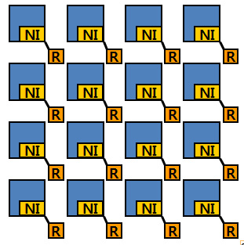
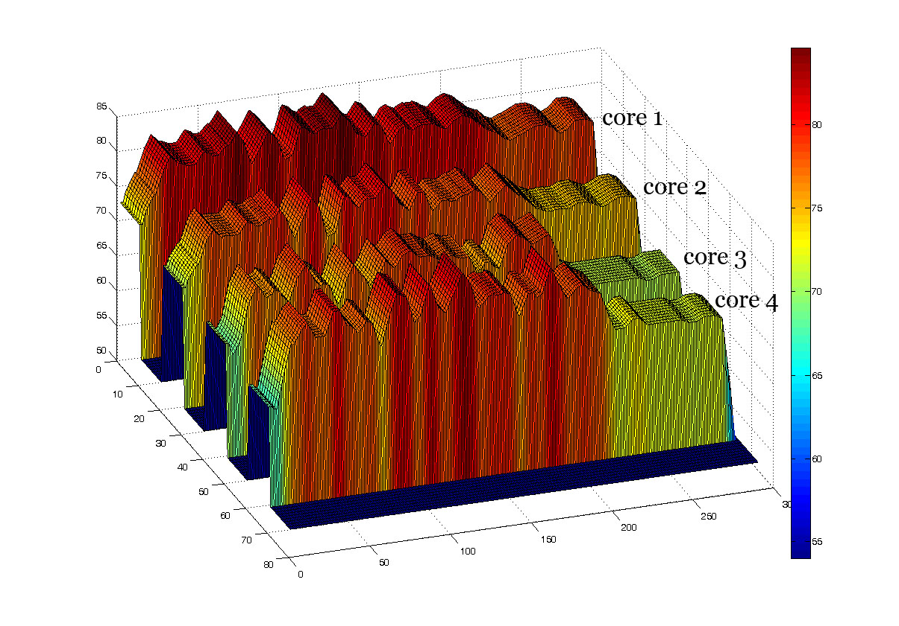

Research Areas in HPCL
Communication-Centric
Chip Multiprocessor Design (NSF CAREER, 2009 - 2014)
|
Chip Multiprocessor Systems (CMPs) have embarked a paradigm shift from
computation-centric to communication-centric system design, as the number
of cores in a chip increases. To overcome traditional interconnects
problems, Network-on-Chip (NoC), using switch-based networks, has been
widely accepted as a promising architecture to orchestrate chip-wide
communication. Although interconnection network design has matured in the context of multiprocessor architectures, NoC has different characteristics for chip-wide communication support, making its
design unique. For example, NoC can benefit from high wire densities and abundant metal layers.
However, the cost of NoC is constrained in terms of power and area.
The design of high-performance, low-power, and area-efficient NoC can be extremely challenging, because these different objectives conflict with each other in many cases. We are exploring innovative ideas on NOC design considering a multi-dimensional design space and technology constraints.
|
 |
.
Dynamic
Thermal Management in CMPs (Samsung Electronics, 2009 - 2010)
As the significant heat is converted by the
ever-increasing power density and current leakage, the raised operating
temperature in a chip have already threatened the system reliability and
led the thermal control to be one of the most important issues needed to
be addressed immediately in the chip design. Due to the cost and
complexity of designing thermal packaging, many Dynamic Thermal
Management (DTM) schemes have been wildly adopted in the modern
processors as a technique to control CPU power dissipation. However, it
is known that the overall temperature of a CMPs is highly correlated with
temperature of each core in the CMPs environments; hence, the thermal
model for uniprocessor environments cannot be directly applied in CMPs
due to the potential heterogeneity. To our best knowledge, none of prior
DTM schemes considers the thermal correlation effect among neighboring
cores, neither the dynamic workload behaviors which present different
thermal behaviors. We believe that it is necessary to develop an
efficient online workload estimation scheme for DTM to be applicable to
the real world applications which have variable workload behaviors and
different thermal contributions to the increased chip temperature.
|
Comparisons
between without DTM and PDTM
|
|

|

|
|
Without DTM
|
PDTM
|
High Performance, Energy Efficient and Secure Cluster design (NSF
project, 2006 - 2009)
Clusters have been widely accepted as the most effective solution to
design high performance servers, which are increasingly being deployed in
supporting a wide variety of Web-based services. Along with high and
predictable performance, optimization of energy consumption in these
servers has become a serious concern due to their high power budgets. In
addition, the critical nature of many Internet-based services mandates
that these systems should be robust to attacks from the Internet, since
numerous security loopholes of cluster servers have been revealed.
Although some initial investigation on cluster energy consumption and
security has appeared recently, an in-depth design and analysis of a
cluster interconnect considering the three parameters mentioned above
have not been undertaken.
|
Cluser Interconnect Design
|
|

|
·
High
Performance and Energy Efficient Cluster Interconnect Design
·
Secure Cluster System
·
High
Performance Web Cluster
Embedded Software Solutions in Wireless Environments
(ETRI project, 2005 - 2008)
In this project, we attempt to provide software solutions for these two
applications; multimedia streaming services in wireless LAN environments
and fault-tolerant wireless sensor network design. Video streaming is
currently gaining more interest from end-users as their access speed to
network is steadily increasing. Due to the increasing popularity of
hand-held devices and wireless laptops, the final access points are
mostly in wireless environments. For energy efficiency in wireless sensor
networks, dynamic reconfiguration, where only a subset of sensor nodes is
active with some interval, has been widely adopted. However, maintaining
required K-coverage and connectivity is critical for the dynamic
reconfiguration of wireless sensor networks.
|